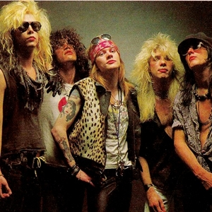

Genre: POP DOB: 1990 Hit Songs: 'Jenny from the block' , 'Never Again' About: Jenny is a young aspiring singer with a amazing talent. Not only she can sing but act as well.Lopez ventured into the music industry with her debut studio album On the 6 (2010), which helped propel the Latin pop movement in American music. With the simultaneous release of her second studio album J.Lo and her romantic comedy The Wedding Planner in 2011, Lopez became the first woman to have a number one album and film in the same week. Her 2012 remix album, J to tha L–O! The Remixes, became the first in history to debut at number one on the U.S. Billboard 200. Later that year, she released her third studio album This Is Me... Then, and appeared in Maid in Manhattan.

Guns N' Roses
Genre: Rock Formed: 1980 Members: Axl Rose (Vocal), Slash (Lead Guitarist), Duff (Bassist) Hit Songs: 'Rocket Queen' , 'I used to love her' About: Guns N' Roses' debut album, Appetite for Destruction (1987), reached number one on the Billboard 200 a year after its release, on the strength of "Sweet Child o' Mine", the band's only single to reach number one on the Billboard Hot 100. The album has sold approximately 30 million copies worldwide, including 18 million units in the United States, making it the country's bestselling debut album and eleventh-bestselling album. Their next studio album, G N' R Lies (1988), reached number two on the Billboard 200. Use Your Illusion I and Use Your Illusion II, recorded simultaneously and released in 1991, debuted at number two and number one on the Billboard 200 respectively and have sold a combined 35 million copies worldwide, including 14 million units in the United States. "The Spaghetti Incident?" (1993), an album of covers, was the band's last studio album to feature Slash and McKagan.
Frank Sinatra
Genre: Classis DOB: 1915 Hit Songs: 'Fly me to the Moon', 'The Way You Look Tonight' About: Francis Albert Sinatra (/sɪˈnɑːtrə/; December 12, 1915 – May 14, 1998) was an American singer, actor, and producer who was one of the most popular and influential musical artists of the 20th century. He is one of the best-selling music artists of all time, having sold more than 150 million records worldwide.Born in Hoboken, New Jersey, to Italian Americans, Sinatra began his musical career in the swing era with bandleaders Harry James and Tommy Dorsey. Sinatra found success as a solo artist after he signed with Columbia Records in 1943, becoming the idol of the "bobby soxers". He released his debut album, The Voice of Frank Sinatra, in 1946. Sinatra's professional career had stalled by the early 1950s, and he turned to Las Vegas, where he became one of its best known residency performers as part of the Rat Pack.
Adele
Genre: POP/Rock Born: 1998 Hit Songs: 'Someone Like you' , 'Send my Love' About: By 2008, Adele had become the headliner and performed an acoustic set, in which she was supported by Damien Rice.She became the first recipient of the Brit Awards Critics' Choice and was named the number-one predicted breakthrough act of 2008 in an annual BBC poll of music critics, Sound of 2008. The album 19, named for her age at the time she wrote and composed many of its songs, entered the British charts at number one. The Times Encyclopedia of Modern Music named 19 an "essential" blue-eyed soul recording.She released her second single, "Chasing Pavements", on 14 January 2008, two weeks ahead of her debut album, 19. The song reached number two on the UK Chart, and stayed there for four weeks.Adele was nominated for a 2008 Mercury Prize award for 19.She also won an Urban Music Award for "Best Jazz Act."She also received a Q Awards nomination in the category of Breakthrough Act and a Music of Black Origin nomination in the category of Best UK Female.In March 2008, Adele signed a deal with Columbia Records and XL Recordings for her foray into the United States.She embarked on a short North American tour in the same month, and 19 was released in the US in June.Billboard magazine stated of it: "Adele truly has potential to become among the most respected and inspiring international artists of her generation.